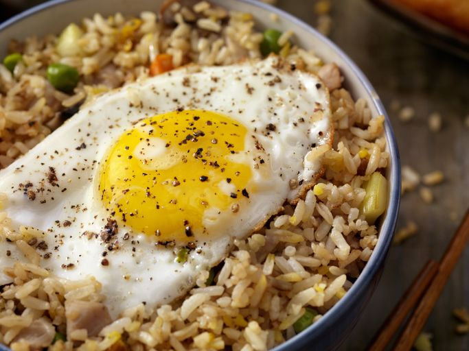

Nasi Goreng

Description
This Uncle Roger fried rice combines chicken flavored rice, a fried egg, and a crazy good stir fry-like sauce for an over-the-top flavor everyone will love. Plus, everything cooks in just one pan, taking under 30 minutes total!
Ingredients you need
- 2 tbsp. Peanut Oil
- 5 Garlic Cloves, smashed
- 1 Shallot, sliced from the middle
- 1 Egg +1 Egg Yolk
- 1 Spring Onion, sliced
- 1 Red Chili, sliced or chopped
- 4 Cups Chicken Flavored Rice (day old works best according to Roger)
- About 2 tbsp. Soy Sauce
- About 2 tbsp. Asian Sesame Oil
- About ½ tbsp. MSG (Monosodium Glutamate)
- First, cook any chicken flavored rice that you want according to the directions on the package.
- While the rice is cooking, whisk the whole egg and the egg yolk in a small bowl, and set it aside.
- Next, coat a wok pan with peanut oil and put it over medium heat. Once it starts smoking, pour the excess oil out of the pan. Then add the garlic and shallot and fry them for 3 minutes.
- Once the time is up, add the beaten egg to the wok and stir it around until it's almost solid. Then add the cooked rice and mix it with everything in the wok.
- After it's mixed, add the soy sauce and sesame oil and flatten it into the rice with the back of a spoon.
- Next, add the MSG, spring onion, and chili to the wok and cook for a minute or so, mixing all of the ingredients together.
- Now that the rice is complete, serve it alone or with your favorite pair and enjoy!